Carol Susan Jane Danvers was born in the mid-1960s as the second child to Joseph Danvers and her mother. Throughout her childhood, she never got along with her parents due to how they treated her based on her gender, yet maintained a good relationship with her older brother, Steve Danvers, who would stargaze with her outside at night. As she grew up, Danvers dreamed of becoming a pilot, idolizing feminine role models like Amelia Earhart. Danvers also developed a determined, rebellious streak that would stick with her for all of her life.
Despite how her parents felt, Danvers still decided to participate in numerous physical sports and activities, including becoming a baseball player on the team called the "Sparrows," where she faced more challenges being a girl on a boys team. In spite of the fact that she would sometimes be knocked down, Danvers always remained determined to stand back up and continue, while others would believe she should stop, which would go against her character.[1]
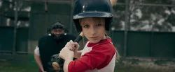
Shortly after turning eighteen, Danvers was accepted to the United States Air Force Academy in order to pursue her dream of becoming a pilot. Arriving at the academy many hours early, she killed time by listening to the airplanes taking off while in her Mustang. One after the other, she guessed them right until the last one: a yellow biplane with blue and red accents. At that moment, she decided to pack up and go. When driving away, a black Jaguar blew past her followed by a woman in a blue Honda and a scrape on the side of the car. Realizing the man hit and ran, Danvers drove up to him in a high speed chase. She took a shortcut which brought her by a state trooper, who tried to pull her over. Danvers did not listen and kept going, eventually pulling in front of the man.
She got out to berate him, but the trooper told her to stop. She explained what the man had done. The trooper arrested the man while Danvers sat on the curb. Danvers saw the woman in the Honda walk into the gas station. They nodded at each other before the trooper walked over to Danvers, who caught her name: Wright. The trooper explained that Danvers broke five laws despite her good intentions. Knowing she was getting written up, Danvers worried that she had ruined her first day before starting it. She echoed these thoughts to Wright, who did not want to ruin her future. Wright instead let her off with a warning and a note, "Let yourself learn."[2]
Danvers woke up on the first day at 3:23 AM to find Maria Rambeau already up and ready, getting her shoes on. Danvers asked if she was going running, only to get a look from Rambeau. Realizing how stupid the question was, Danvers asked if she could join her. Rambeau said if she could get ready in seven minutes then yes. Danvers was quickly getting ready when the ticket from Wright fell out of her pocket. Danvers explained what happened and Rambeau exercised the idea that "let yourself learn" meant learning about yourself. Danvers and Rambeau then went out running, but did not go so long as to ruin their first day of assessments.
As assessments started, they had to run a mile and a half, do one minute of push-ups, sit-ups, and then pull-ups. It acted as a competition where each pair got a certain amount of points. By the mile run, Rambeau, her, Tom Bianchi, and Garrett Pierre were in the lead. Pierre and Bianchi had more pull-ups, but Rambeau had more push-ups and Danvers had more sit-ups. As the race commenced, Danvers and Rambeau eventually placed first and second respectively with Bianchi in third and Pierre in fourth. Rambeau and Danvers talked and Danvers said the men do not matter as long as they do not get in her way. Pierre, Bianchi, and Erik Del Orbe overheard and took exception. Bianchi told her that woman do not fly combat. Rambeau stood up for Danvers asking if he really wanted to go through this when he just lost. Bianchi told her she could always come in first, but he will always be the pilot.
Chen and Resendiz called everyone in, so they broke off their argument and complied. However, Danvers could not get his words out of her head. In her dorm, Rambeau showed her the Flying Falcons; an elite squadron. If they are the top two in their class and make that squadron, they could not be turned down. Danvers admitted that they will try to turn them down, but Rambeau replied to let them.[8]
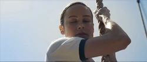
In the academy, Danvers had to contend with the USAF's "Boys Club" culture, continuously being told she wasn't good enough or harassed for being a female. Regardless of the obstructions, Danvers never let the constant heckling or immense physical challenges stop her, working her way to become one of the best pilots on record.[1]
Overtime, Danvers would become the godmother to Maria Rambeau's daughter, Monica, as well as becoming a part of their family, as she didn't have much connection with her own.
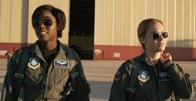
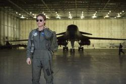
Due to long held restrictions in the United States Air Force at the time, Danvers and Maria Rambeau weren't allowed to fly in combat, despite being just capable, or even better, than any other pilot. However, they were offered a position to become test pilots for Project P.E.G.A.S.U.S., a joint sciences project between the Air Force, S.H.I.E.L.D. and NASA, under the military scientist Doctor Wendy Lawson.
One morning in 1989, Danvers and Maria Rambeau decided to have a friendly race to the base, with Danvers taking a shortcut to claim victory. Upon their arrival, they discovered Wendy Lawson in an agitated state stating she had lives to save. Noticing she was trying to pilot the Asis aircraft, Danvers volunteered to pilot it instead, concerned for the lives at stake Lawson mentioned. Once the two were airborne in the craft, Lawson provided Danvers with the coordinates for her laboratory.
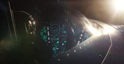
Beginning the ascent, they had suddenly noticed an unidentified aircraft approaching them, much to Lawson's fear, who ordered Danvers to get them out of there. Danvers did her best to evade the attacks while she asked what they wanted, which Lawson revealed was her work on board. Danvers managed to pull a maneuver that got her behind the enemy aircraft, but before she could open fire, the aircraft started firing backwards with aft facing armaments.
These attacks damaged the Asis, causing it to go down from engine damage. While Danvers tried to eject herself and Lawson from the Asis, the function didn't work so she attempted to land the aircraft near a lake and they crashed. As Danvers got out of the Asis to check on Lawson, she noticed that her blood was blue. Danvers helped her out of the Asis, where Lawson told her that she is not Wendy Lawson, but a Kree scientist named Mar-Vell from Hala. Mar-Vell then warned Danvers to escape so she doesn't also become a casualty in the war she had been fighting.
Mar-Vell also told Danvers to remember the coordinates so she could finish her mission, as Mar-Vell then pulled out an alien pistol trying to destroy the Light-Speed Engine. By surprise, Mar-Vell was murdered before she could fire, causing Danvers to pick up the pistol to defend herself from Yon-Rogg. He asked Danvers where the core was, but she bluffed him by informing him that he would be surrounded soon, in the hopes he'd run from a threat of a show of force.
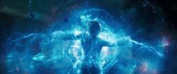
When Yon-Rogg then went to finish Danvers off, she stopped him, and informed him of the core's location: right next to her. Located at the heart of the engine, Yon-Rogg eyed it while Danvers decided to shoot and destroyed it, as Mar-Vell intended. The sudden explosion then unleashed a massive outburst of Tesseract energy which was absorbed by Danvers into her genetic code, leaving her unconscious in a crater.
The next day, Danvers, Talos, Nick Fury, Maria Rambeau and Goose boarded the Quadjet and began their journey to Mar-Vell's Laboratory. Danvers piloted the group into space, successfully leaving the Earth's atmosphere despite some turbulence.
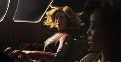
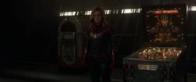
Talos then comforted Danvers in the fact that they've all done things they're not proud of in the war, but it didn't matter now as she helped him find his family. He then informed Danvers that there were still other Skrulls separated across the galaxy. Suddenly they were ambushed by Starforce who had tracked them down. Yon-Rogg noticed how Danvers changed her uniform, which the other members commented on her need to be set straight by the Supreme Intelligence.
Still angry at Yon-Rogg for lying and using her, which he told her was all to make her the best version of herself, Danvers attacked him. However, knowing her power, Yon-Rogg activated the photon inhibitor, taking away her abilities so the fight was hand-to-hand. Because he was superior in his fighting ability, Yon-Rogg defeated Danvers and used his Magnitron Gauntlets to knock her out.[1]
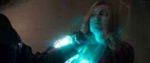
While unconscious, Danvers was connected to the Supreme Intelligence, which accessed her newly recovered memories of Earth, playing Come as You Are and dressing like Mar-Vell. Danvers then threatened the Supreme Intelligence to release her, but she refused, disabling her powers, telling Danvers she wasn't strong enough to use them on her own.
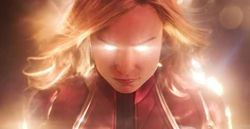
Despite the Supreme Intelligence's efforts, Danvers resisted submitting to her as well and the following attacks, using her sheer will power to try and break free, disabling her photon inhibitor. Now, with the full extent of her powers unlocked, Danvers broke free from the Supreme Intelligence, waking up back in Mar-Vell's Laboratory, and stood before Starforce in Binary Mode. Danvers then released a powerful pulse, knocking them all away and retaking the Tesseract.
Danvers then found Nick Fury and Maria Rambeau fighting two Kree soldiers, so she fired a photon blast to save them, as they watched in awe of how powerful she now was. Danvers then ordered Fury to take the Tesseract and get it to safety, but he refused to touch it, so Goose swallowed it, much to their shock. Danvers then told them to get the Skrulls to the Quadjet while she bought them some time.[1]
Danvers kept the lunchbox with her so it seemed she had the Tesseract, allowing her allies to escape. As Danvers waited, she was soon surrounded by Starforce. Trying to buy as much time as she could, Danvers quipped with her former teammates, tricking them into thinking she had the Tesseract.
Bron-Char then charged at her, so Danvers blasted the bridge, causing them to fall and be trapped under the rubble. Danvers, however, was unaffected by the fall and prepared to fight Starforce with her new powers. Danvers was able to easily knock away them with her stronger photon blasts, but due to her inexperience controlling that power, she occasionally got overwhelmed by it. After knocking away Korath, Danvers dueled with Minn-Erva, who revealed that she never liked her.
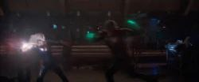
Danvers then continued to take on Starforce, who all made attempts to defeat her, but to no prevail. Danvers then reclaimed the lunchbox as Yon-Rogg got up from the rubble and attacked her. Yon-Rogg proceeded to throw objects at her with his Magnitron Gauntlets, which she was able to dodge until it became too much and she got pinned. When Danvers dropped the lunchbox, it opened, revealing that the Tesseract was gone, and she had been wasting their time.
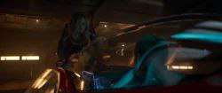
Yon-Rogg then left the fight to retrieve the Tesseract, so Danvers went to chase after him, only to be knocked back by Bron-Charr. After a brief brawl with Bron-Charr and Korath, Danvers defeated them and went after Yon-Rogg. When she caught up to Yon-Rogg, he was trying to leave in a drop ship, so Danvers jumped on it, but he released it into space with her holding on. Danvers then equipped her helmet and tried to attack Yon-Rogg, but he blasted her away, causing her to plummet towards Earth.
As she was falling at a fast pace, Danvers began to focus herself and discovered she possessed the ability to fly, stopping her from hitting the ground. Danvers then flew back to Yon-Rogg's pod and knocked it out of the sky with a photon blast, saving her allies in the Quadjet. Danvers then took a moment to enjoy the fact that she could now fly, letting out a loud cry of joy.[1]
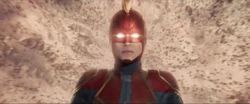
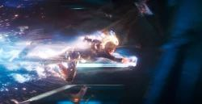
Danvers then flew into space to destroy the warships but was met by a fleet of fighter ships, which she skillfully evaded. Despite the great number of them, Danvers cleared through all the fighters with ease, using her newly empowered photon blasts and even crashing into them with her indestructible body. Danvers then proceeded to destroyed one of the warships, crashing through it with one strike.
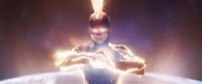
After proving that she can defeat anything they throw at her, Danvers confronted Ronan, showing off her newly discovered power in front of him as a warning by releasing a massive pulse of energy. Understanding how extremely underpowered they were, Ronan and the rest of the Accusers fled from Earth, although he vowed to return.
With Earth safe from the Accusers, Danvers returned to the surface to deal with Yon-Rogg, who had crash-landed. The two walked towards each other, preparing for a fight before anything could happen, Yon-Rogg holstered his weapons, knowing he would lose, and attempted to manipulate her into fighting him hand-to-hand. No longer letting herself be controlled by Yon-Rogg's lies, Danvers blasted him away, crashing into the rock face. Strolling up to him, Danvers declared that she had nothing to prove to him, ultimately breaking free from his attempts to suppress her humanity.
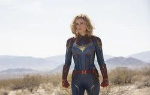
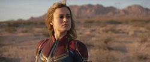
Danvers then dragged the defeated Yon-Rogg back to the crashed drop pod and charted a course for Hala. Yon-Rogg told her that he couldn't return to the Supreme Intelligence empty-handed, but Danvers gave him a message to deliver, that she was going to end the Kree-Skrull War. Danvers then powered the ship with a photon blast, launching it into space and back to Hala.[1]